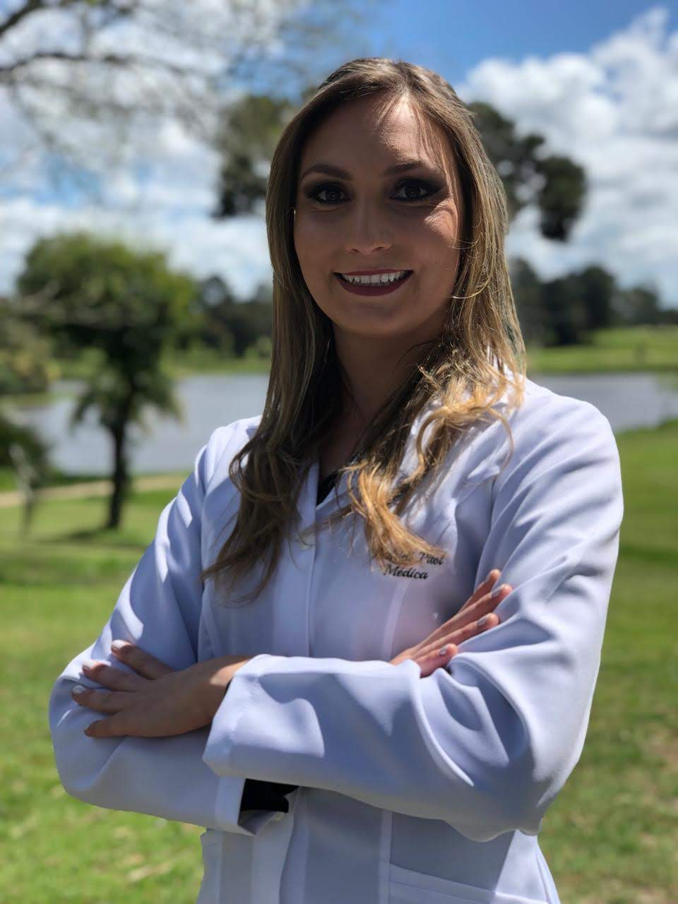

Sobre Andrieli Pitol

Dra. Andrieli Pitol é médica especialista em Cirurgia Vascular e Endovascular, com uma trajetória
marcada por dedicação e excelência.
Formada em Medicina pela Universidade Católica de Pelotas-RS, fez sua especialização com residência
em Cirurgia Geral no Hospital
São Vicente de Paula, em Passo Fundo-RS.
Posteriormente, aprofundou seus conhecimentos em Cirurgia Vascular no Hospital Universitário de
Florianópolis-SC e concluiu sua
formação em Cirurgia Endovascular no renomado Hospital Baía Sul, também em Florianópolis.
Atua com comprometimento, sempre em busca do
melhor cuidado aos seus pacientes.
Graduação em Medicina
Graduação em Medicina pela Universidade Católica de Pelotas(UCPEL), Pelotas/RS. Concluída em 2019.
Cirurgia Geral
Residência em Cirurgia Geral pelo Hospital São Vicente de Paulo(HSVP), Passo Fundo/RS. Concluída em 2022.
Cirurgia Vascular
Residência em Cirurgia Vascular pelo Hospital Universitário Polydoro Ernani de São Thiago(HU-UFSC), Florianópolis-SC. Concluída em 2024.
Cirurgia Endovascular
Fellowship e Atuação em Cirurgia Endovascular pelo Hospital Baía Sul, Florianópolis-SC. Concluída em 2025.